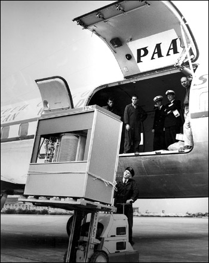

This IBM 305 RAMAC Computer, introduced in 1956, was the first computer containing a (5 MB) hard drive on 24 huge spinning platters. Today you can get 1000 times more memory in something the size of your thumb.
Given the technology that's already available, we should have cars that drive us around, in absolute safety, while we lounge in the back and sip champagne. All we need is a video camera on the roof, plugged into a PC, right? We have all the necessary hardware, and have had it for years, but don't yet have robot-driven cars because we don't have the software. This book explains how we can build better software and all get our own high-tech chauffeur.
The key to faster technological progress is the more widespread use of free software. Free versus proprietary (or non-free) software is similar to the divide between science and alchemy. Before science, there was alchemy, where people guarded their ideas because they wanted to corner the market on the means to convert lead into gold. The downside of this “strategy” is that everyone would have to learn for themselves that drinking mercury is a bad idea .1 The end of the Dark Ages arrived when man started to share advancements in math and science for others to use and improve upon. In fact, one way to look at history is to divide it between periods of progress and stagnation.
Computers are an advancement comparable to the invention of movable type. While computers and the Internet have already changed many aspects of our lives, we still live in the dark ages of computing because proprietary software is still the dominant model. One might say that the richest alchemist who ever lived is my former boss, Bill Gates. (Oracle founder Larry Ellison, and Google co-founders Sergey Brin and Larry Page are close behind.)
This book will discuss free software, but the question of whether scientific research and resources of information such as libraries should be free was answered long ago. In fact, the first (privately funded) library in America was created by Ben Franklin in 1731, 45 years before the nation itself was founded. The library's motto was the Latin phrase: “To support the common good is divine.” Ben Franklin understood that sharing knowledge has no downside.
Human knowledge increasingly exists in digital form, so building new and better models requires the improvement of software. People can only share ideas when they also share the software to display and modify them. It is the expanded use of free software that will allow a greater ability for people to work together and increase the pace of progress. The case studies examined in this book demonstrate that a system where anyone can edit, share, and review the body of work will lead not just to something that works, but eventually to the best that the world can achieve! Better cooperation among our scientists will lead to, robot-driven cars, pervasive robotics, artificial intelligence, and much faster progress in biology, all of which rely heavily on software.
A later chapter will describe the software freedoms in more detail, and the motivations for programmers to use and write free software, but it is important to clarify here that free software generally means that the source code is made available to its users. Microsoft's Internet Explorer is not free because it requires a Windows license, but more importantly, you cannot download the source code to learn how it works.
Today, proprietary software is considered more valuable than free software because its owners charge for a black box, but that thinking is exactly backwards. Proprietary software is less valuable because you cannot learn how it works, let alone improve it. It cannot make you better, and you cannot make it better. It is true that not everyone will exercise the right to read and change their software, just as not everyone exercises their right to their freedom of the press, but that doesn't make the freedom any less valuable!